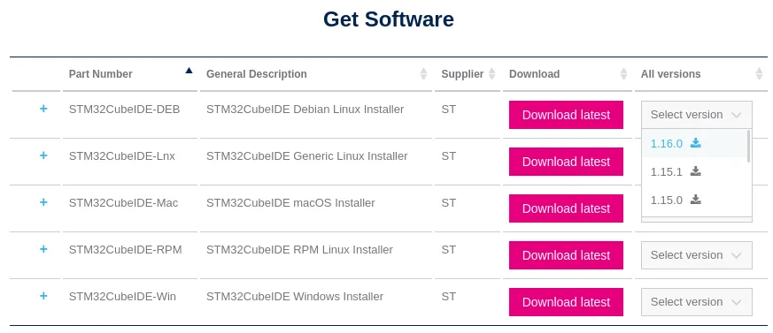
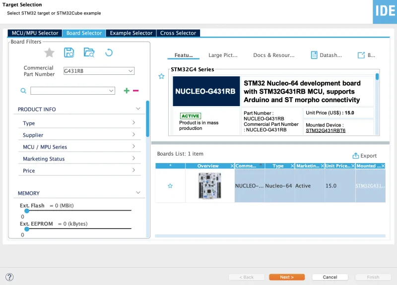
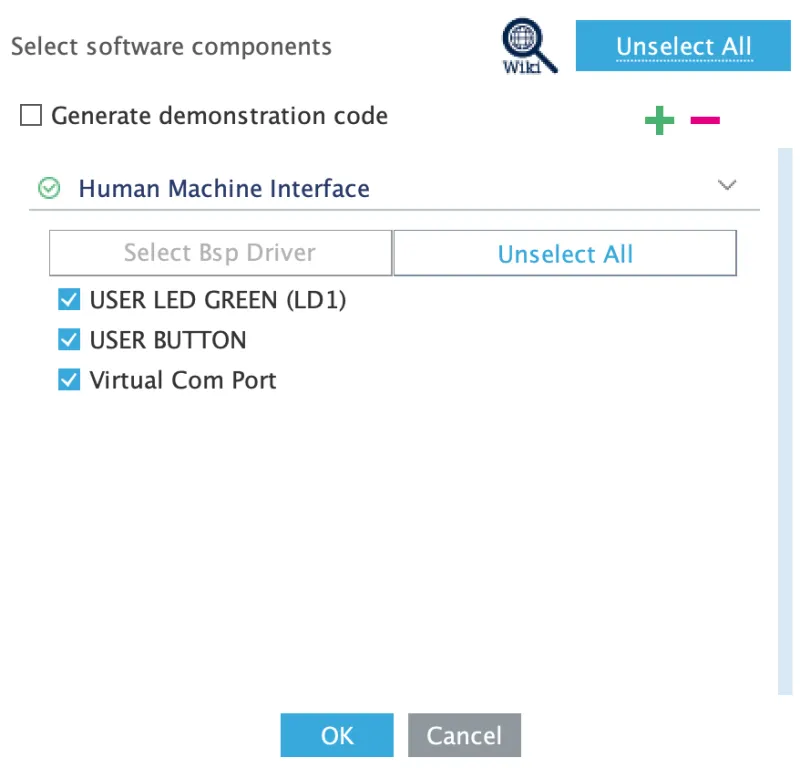

STM32CubeIDE
About
STM32CubeIDE allows the user to write, compile, and flash code to the STM32 microcontroller! The IDE is based on the Eclipse framework and contains the GCC compiler and GDB debugging tool for in program compilation and debugging. The IDE also has flashing functionality for easy and quick programming of the STM32 microcontroller. The IDE provides a very powerful interface for automatic code generation, allowing the user to initialize an entire module with a few clicks of a button, and have that code show up automatically in the main file.
Downloading and Installing
Download
-
Go to the CubeIDE download page and scroll down to "Get Software."

-
For this walkthrough, we will be using the Debian Linux installer for UBUNTU USERS. Click on "Select Version", then select the newest version for the correct OS you are running!!!
-
Click on Accept for the License Agreement pop up.
-
You will then be prompted to log in, create an account, or continue as a guest. You will need a MyST account in the future, so it is best to create one now. You may use any email address.
-
After logging in and being brought back to the download page, scroll back down to "Get Software". It may take a while for the "Get Software" section to load.
-
Download the newest version of the OS you are running. Again, this tutorial will be using the Debian Linux installer.
Install
Note: This install guide is for Linux. Please make sure to install the correct version for the OS you are running.
1. Open a new terminal (guide).
2. The downloaded installer zip file should be in your Downloads folder. You can navigate to this
folder by entering the following command in your terminal:
cd ~/Downloads3. You should now be able to see the installer .zip file, if you run the following command:
ls4. To unzip the installer, run the following command (this may take a second):
unzip <zip_file_name>For example:
unzip en.st-stm32cubeide_1.16.0_21983_20240628_1741_amd64.deb_bundle.sh.zip5. You should now be able to see the installer .zip file along with the installer .sh file if
you repeat the ls command in step 3.
6. Run the installer by running the following (you may be prompted to enter your password):
sudo sh <sh_file_name>For example:
sudo sh st-stm32cubeide_1.16.0_21983_20240628_1741_amd64.deb_bundle.sh7. Accept the installer license agreement by entering s until you are given the option to accept.
Then, enter y and then the Enter key.
8. Install the Segger J-Link udev rules by clicking y and then the Enter key.
9. Accept the Segger J-Link license agreement by entering s until you are given the option to accept.
Then, click y and then the Enter key.
10. It may take a while to install. You are done once you have seen the following:
STM32CubeIDE installed successfully11. You should now be able to launch STM32CubeIDE from the Ubuntu Applications menu (guide).
Creating a New Project
This quick guide will teach you how to make a new project for your STM32G431RB Nucleo board that you will be developing on.
Prerequisites
- STM32CubeIDE installed
Guide
Open STM32CubeIDE, select the desired workspace, and click Launch (the default is fine for now).

In the top left, go to File→New→STM32 Project.

You may experience some lag after the previous step. Eventually, you will be prompted with the following window:

At the top, select the Board Selector option.
Then on the left, in the text box next to Commercial Part Number, type G431RB.
There should only be one option in the Boards List Section, click that and press Next:

Now you will be prompted with the following window:

Here you can name your project whatever you want, but we can just call it "tutorial". Leave everything else as default and click Finish.
You will then be prompted with this window to configure this board. Make sure to uncheck all the
boxes by clicking Unselect All. Then select OK.

It may also ask about changing perspective. Here, it comes down to preference, but you can just click Yes.

You should now see the following screen, which means that you have successfully created the project!
Notice the graphical interface of the chip on the right (which we may call the .ioc file) and the
files on the left that fall under the tutorial project (most importantly, Src/main.c and
tutorial.ioc). Cool things to know is the graphical interface is used to make changes to the chip
settings. If changes are made, then once the project is saved, code will be auto-generated for the
user. The main.c file is where you will want to write your code.

Congratulations! You have successfully created a new project in CubeIDE!
Opening an Existing Project
This quick guide will teach you how to open an existing STM32 project in your STM32CubeIDE workspace.
Prerequisites
- STM32CubeIDE installed
- Any existing STM32 project downloaded
Guide
Open up STM32CubeIDE.
Then, select the desired workspace that you want to open the project in and click Launch.
In the top left, go to File→Open Projects from File System.
Open the project directory in Import source.
Click Finish.
Congratulations! You have successfully opened an existing project in CubeIDE!
Note: Your project files will remain in the original directory that you opened and any changes you make in STM32CubeIDE will reflect in the original directory. All that you have done is added the project to the workspace, allowing you to open it in STM32CubeIDE.